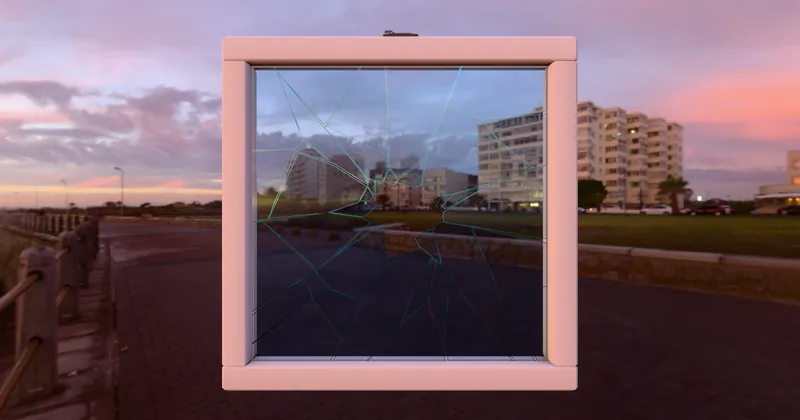

GLTF GLTF Extensions KHR_materials_transmission
Glass Broken Window - RedGPU WebGPU Example
Expresses the thickness and refraction of a broken window.
깨진 유리창의 두께감과 굴절을 표현합니다.

GLTF GLTF Extensions KHR_materials_transmission
Expresses the thickness and refraction of a broken window.
깨진 유리창의 두께감과 굴절을 표현합니다.
